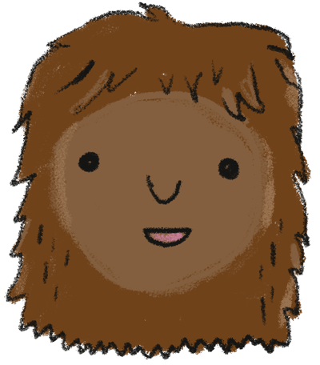

Ali Muñiz likes mathematical puzzles, morris dancing, and choral singing. He enjoys finding fiddly bugs in code and squishing them!
Emily Baier is an extremely positive creative problem solver. When she isn't coding, Emily enjoys embroidery, knitting, drawing, making soup, and spending time with her family.
 Sean Nelson recently transitioned from the Journalism industry and is now an Apprentice Developer in Portland, Oregon. Sean loves spending time outdoors, being near his puppy, playing and listening to Bluegrass, and generally being surrounded by music and friends.
Megan Marshall is an Apprentice Developer in Portland, Oregon. She is a retired amateur tap-dancer.